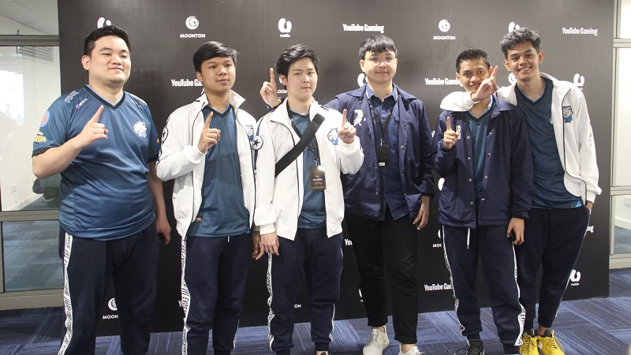
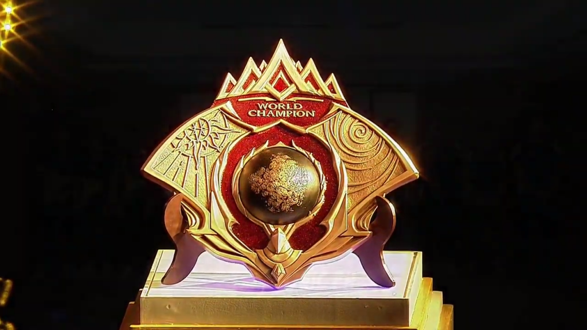
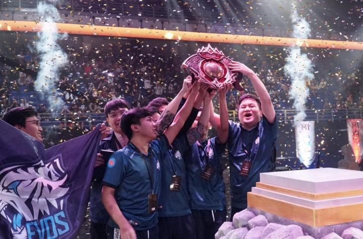

Roaster Evos
Inilah para wajah-wajah yang berhasil meraih kejuaraan World Championship atau M1 tahun 2019 di Kuala Lumpur, Malaysia.

Dari yang paling kiri, yaitu Yurino Putra atau yang lebih dikenal sebagai "Donkey". disebelahnya, ada sang kapten Luminaire. Kemudian ada Gustian atau REKT. di sebelah Gustian ada seorang coach yaitu Bjorn Ong atau Zeys. di sebelah coach, ada sang Jungler Evos, yaitu Wann dan paling kanan ada MVP M1 yaitu Eko Julianto atau Oura.
Turnamen Kejuaraan Dunia (M1)
Dalam turnamen Mobile Legends World Championship (M1) 2019 yang berlangsung di Kuala Lumpur, Malaysia, EVOS berhasil keluar sebagai juara usai menumbangkan RRQ dalam drama 7 pertandingan dengan skor 4-3. Partai Grand Final M1 digelar pada Minggu (17/11) .

Meski RRQ Hoshi sempat unggul di awal-awal game dengan skor 3-1, EVOS Legends langsung bermain agresif dan berhasil mengubah alur pertandingan.
Di babak akhir, RRQ harus mengakui keunggulan EVOS setelah mampu mengambil First Kill dan menghancurkan 7 turret milik RRQ.
Hanya dalam waktu kurang dari 8 menit, pertandingan pun berakhir untuk kemenangan EVOS Legends.

Kemenangan ini pun menorehkan cerita yang begitu berkesan untuk EVOS. Muasalnya, setelah 3x gagal membawa pulang piala MPL ID, mereka tak hanya berhak menyandang gelar tim terbaik se-Indonesia tapi juga sedunia.